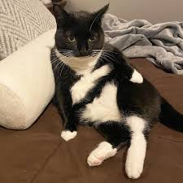
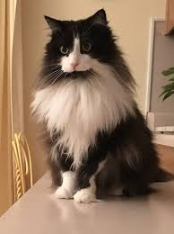

Short-haired tuxedo cats are the definition of low-maintenance style. With their smooth, glossy black and white coats, they always look sharp without needing constant grooming. Their short fur makes them perfect for people who love cats but don’t want to deal with a lot of shedding or daily brushing. Short-haired tuxedo cats are often sleek, athletic, and quick on their feet — it’s not uncommon to catch them darting through the house like little shadows with white paws. Personality-wise, short-haired tuxedo cats are known for being bold and curious. They love to explore their surroundings, chase after toys, and find sunny spots for afternoon naps. They’re friendly but independent, often happy to entertain themselves — though they won’t turn down attention when you’re ready to give it. Their minimal grooming needs combined with their playful energy make them a favorite for first-time cat owners or busy households.
Long-haired tuxedo cats bring dramatic flair to any home. Their fluffy black and white coats give them an elegant, almost regal appearance — like little cat royalty dressed in formal wear. But behind that fancy exterior is usually a playful, affectionate, and sometimes silly personality. Long-haired tuxedo cats are often described as lap lovers, happily lounging around while soaking up attention from their humans. Of course, that beautiful fur does come with some upkeep. Long-haired tuxedos need regular brushing to keep their coats free of tangles and to reduce shedding around the house. Most of them enjoy the grooming time because it feels like extra attention. In return, they’ll reward you with cuddles, loud purrs, and a calm, loving presence around the house. Long-haired tuxedo cats bring both beauty and warmth into a home — the perfect mix of fancy looks and down-to-earth charm.
